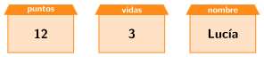
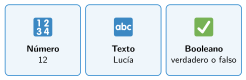

Variables: la memoria del programa
🤔 Pienso5 min
Qué hago aquí: Piensa un momento y contesta con lo que ya sabes. No pasa nada si no lo sabes: es para empezar.
Piensa en un videojuego. Escribe tres datos que el juego tiene que recordar.
📖 Leo y aprendo15 min
Qué hago aquí: Lee despacio, mira los dibujos y los ejemplos, y quédate con la idea clave del final.
Un programa tiene que recordar datos: los puntos, las vidas, tu nombre… Los guarda en variables.

En Scratch, ve a Variables (naranja) y pulsa Crear una variable. Usarás tres bloques:
- fijar a: pone un valor nuevo.
- sumar a: suma una cantidad.
- mostrar variable: enseña el marcador en el escenario.

Hay tres tipos de datos: números (12), textos (Lucía) y booleanos, que solo pueden ser verdadero o falso.
✏️ Hago25 min
Qué hago aquí: Haz las actividades en orden. Empieza siempre por las básicas.
Monta el contador de clics y pruébalo. Marca cuando funcione:
Escribe el tipo de cada dato: número, texto o booleano.
- 25
- Santander
- verdadero
- 3,5
puntos vale 4. ¿Cuánto vale después de sumar a puntos 10? ¿Y después de fijar puntos a 10?
Crea una variable vidas. Empieza en 3 y baja 1 cada vez que pulsas la tecla v. Escribe los bloques.
✏️ Puedes responder escribiendo, con un dibujo o un esquema, o contándolo en voz alta.
🚀 Amplío (si quieres saber más)
Qué hago aquí: ¿Has terminado? Lee la curiosidad o elige el reto. Es voluntario.
Con preguntar y respuesta, haz que el gato pregunte tu nombre, lo guarde en nombre y diga «Hola, …». Pista: el bloque unir.
✅ Compruebo5 min
Qué hago aquí: Contesta sin mirar la ficha y marca cómo lo llevas.